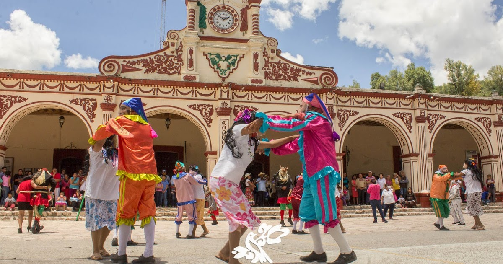

Danza de las MascaritasOrigen y Significado La danza de las mascaritas tiene su origen en los bailes cortesanos europeos traídos a la Mixteca por los conquistadores en el siglo XVI. Con el tiempo, esta danza se transformó al integrar elementos de la cultura indígena, convirtiéndose en una representación que ridiculiza los movimientos de los colonos a través de la utilización de máscaras. Esta danza no solo es un espectáculo visual, sino que también tiene un profundo significado cultural, simbolizando la lucha entre el bien y el mal, representados por personajes como el diablo y la muerte. Características de la Danza Coreografía: La danza comprende coreografías que involucran al menos ocho parejas de hombres y mujeres, quienes visten trajes tradicionales y máscaras. Los danzantes realizan movimientos alrededor de una pareja principal, creando una dinámica visualmente atractiva. Música: La danza es acompañada por música de violín y guitarra, lo que añade un ambiente festivo a la celebración. Elementos Culturales: Se incorporan elementos como el tejido de cintas, que simboliza la fertilidad y la abundancia, reflejando la rica herencia cultural de la región. La danza de las mascaritas se presenta en diversas festividades, siendo especialmente prominente en la celebración de Nuestro Padre Jesús en San Pedro y San Pablo Teposcolula, donde se lleva a cabo un recorrido por las calles y las casas de la comunidad. Durante estas festividades, los danzantes son recibidos con bebidas y alimentos, y se busca limpiar los hogares del mal y pedir por buenos tiempos. |
 |